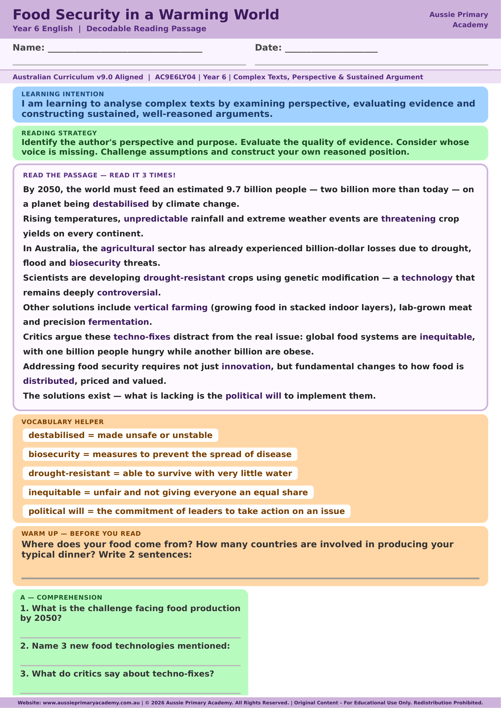

Year 6 · English · Free Printable
Food Security
A free Year 6 reading comprehension worksheet that helps students understand food security and how global food systems affect everyday life.
Worksheet Preview

Preview of page 1 · Full answers included in the PDF
Quick Facts
- Year level: Year 6
- Subject: English · Reading Comprehension (Science link)
- Curriculum: AC9E6LY04
- Time: About 15–20 minutes
- Format: Colour PDF · Answers included
- Best for: Independent work, guided reading, homework or tutoring
About this worksheet
This Year 6 reading comprehension activity introduces students to the idea of food security — having reliable access to enough safe and nutritious food. Students read an informational text about global food systems, then answer questions that check understanding, vocabulary and inference.
Because the topic connects literacy with real-world systems thinking, it also works well alongside Science discussions about sustainability, living systems and how human activity affects food production.
The worksheet is designed for Australian classrooms and home learning. Instructions are clear, the text is age-appropriate, and a full answer key is included in the same PDF so teachers and parents can mark quickly.
Learning Intention
Students will read and comprehend an informational text about food security and demonstrate understanding by answering literal and inferential questions.
Australian Curriculum
AC9E6LY04 — Analyse how text structures and language features work together to meet the purpose of a text and engage audiences.
Supports Year 6 English reading comprehension skills under Australian Curriculum V9.0. Aussie Primary Academy is an independent publisher and is not endorsed by ACARA.
Skills Practised
- Reading comprehension
- Locating key information
- Inferring meaning from context
- Understanding informational text features
Teacher / Parent Notes
Use as a warm-up, guided reading task or independent homework. Discuss what “food security” means before reading if the term is new. Answers are included at the end of the PDF.
Cross-curricular tip: pair with Year 6 Science topics on living things, environments or sustainability for a combined literacy + inquiry lesson.
Suitable for mainstream Year 6, tutoring and homeschool programs across Australia.